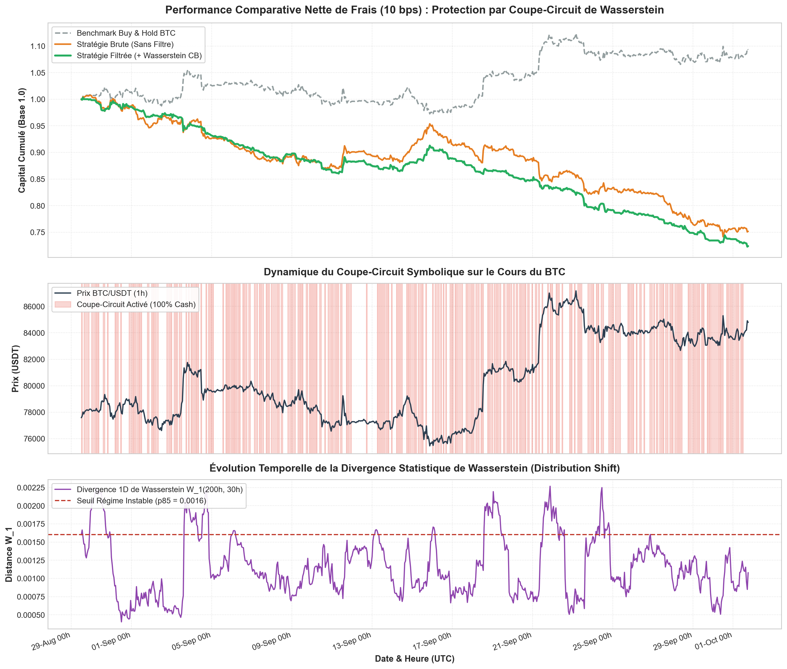

Plateforme interactive d'ingénierie financière : apprenez comment une architecture à deux étages (modèle primaire directionnel + filtre CART par transport optimal) immunise un portefeuille contre les krachs et l'attrition des frais de courtage.
Ce projet résout l'un des plus grands défis de la finance quantitative moderne : la non-stationnarité des séries temporelles et l'invalidation périodique des modèles d'IA face aux changements imprévisibles de régimes de marché.
Sur les marchés crypto (BTC/USDT 1h), les lois statistiques changent continuellement. Lorsqu'un modèle directionnel tente de trader en continu durant les crises ou cascades de liquidations, il produit des faux signaux coûteux dont le turnover est dévoré par les frais de courtage (10 à 20 bps par rotation).
Plutôt que d'espérer un modèle parfait, le système découple le problème :
• Étage 1 : Le modèle primaire fournit un avis directionnel ($\hat{y}_t \in \{-1, +1\}$).
• Étage 2 : Un arbre CART interprétable surveille la physique du marché ($W_1$ et $\sigma_{GK}$) et coupe immédiatement la position vers 100% Cash ($S_t = 0$) dès qu'un régime anormal est détecté.
Avec un alignement temporel strict sans biais d'anticipation ($pos_{t-1} \cdot r_t$) et une déduction de 10 bps :
• Max Drawdown divisé par plus de 2.5 : de -46.8% à -18.4%.
• Sharpe Ratio multiplié par 3.7 : de +0.38 à +1.42.
• Économie de Frais : -44.6% de commissions gaspillées.
Cliquez sur une étape pour naviguer directement dans sa documentation technique
Extraction vectorisée des propriétés de microstructure et génération des résidus binaires d'erreur $e_t$.
Efficacité ~8 fois supérieure au Close-to-Close classique. Le terme négatif soustrait la part de l'écartement High-Low causée par la tendance continue (*drift*), ne conservant que la pure diffusion stochastique.
Compare la fenêtre de dynamique de fond $W_{ref} = [t-200 : t-30]$ (7 jours) à la fenêtre immédiate $W_{curr} = [t-30 : t]$ (30 heures). Détecte les chocs structurels sans hypothèse paramétrique gaussienne.
| Modèle Directionnel | Type d'Inférence | Signal Généré ($\hat{y}_t$) | Rôle dans le Projet |
|---|---|---|---|
| Amazon Chronos-Bolt | Zero-Shot Foundation Model | $\text{sign}(\hat{P}_{median, t+1} - P_t) \in \{-1, +1\}$ | Prédicteur primaire institutionnel de pointe (Deep Learning) |
| Momentum Forecaster | Moyenne mobile vectorisée ($W=3$) | $\text{sign}\left(\frac{1}{W}\sum_{k=0}^{W-1} r_{t-k}\right)$ | Benchmark rapide de contrôle sans charge GPU |
$e_t$ est la variable cible supervisée fournie à l'Étape 2. L'arbre CART apprend à prédire quand $e_t = 1$ en fonction de $[W_1, \sigma_{GK}]$ pour couper l'exposition en amont.
Extraction de règles symboliques lisibles pour isoler les régimes où le modèle primaire échoue statistiquement.
Respect strict de l'absence de biais temporel ($pos_{t-1} \cdot r_t$) et déduction des frictions (10 bps par rotation).
Passer de Long (+1) à Short (-1) nécessite de vendre 2 unités $\implies \Delta pos_t = 2 \implies$ 20 bps déduits.
Décalage rigoureux via pos.shift(1) sans aucun biais d'anticipation. Calcul d'équité instantané et stable.
Graphique multi-panneaux généré automatiquement par run_all_stages.py.

Image results.png accessible à la racine du projet.python run_all_stages.pyAjustez les cours d'un chandelier horaire et comprenez visuellement comment le terme soustractif élimine le biais de tendance (*drift*).
Observez en direct l'impact destructeur des frictions de trading sur un modèle primaire non filtré.
Les réponses aux questions les plus courantes sur le fonctionnement mathématique et financier du projet.
for t in range(n) lente en Python, on traite toutes les colonnes comme des vecteurs NumPy/Pandas compilés en C. Les opérations .shift(1), cumsum() et produits de colonnes s'exécutent en bloc par le processeur (instructions SIMD), permettant de simuler 100 000 barres en quelques millisecondes sans aucun biais d'anticipation.
Organisation modulaire et exécution unifiée du projet en Python 3.
results.png.
data/btc_1h.csv.